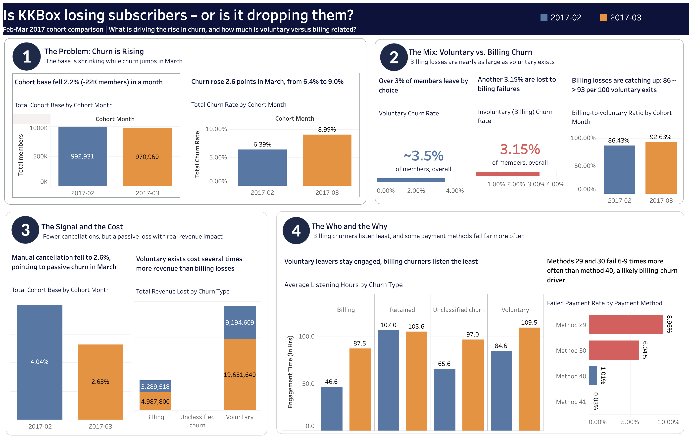

Is KKBox Losing Subscribers or Dropping Them?
Churn analysis of a music-streaming service, by Shriya Wadetwar. Group project, Trinity Business School
(Data Management and Visualization, October 2026).
Tools: Python, DuckDB, SQL, Tableau. Data: KKBOX WSDM Cup 2018 churn dataset (Kaggle).
Overview
Research question: What is driving the rise in churn between the February and March 2017 cohorts,
how much of it is voluntary versus billing-related, and what does each type cost KKBox?
Headline: Churn rose from 6.39% to 8.99% in one month while manual cancellations fell
by about a third, so the rise is mostly passive: members lapsing, not choosing to leave.

Open the interactive dashboard on Tableau Public
Key metrics (Feb vs Mar 2017)
6.39% → 8.99%Churn rate (+2.6 pts)
63.4K → 87.3KChurned members (+38%)
4.04% → 2.63%Manual cancellation rate
0.86 → 0.93Billing-to-voluntary ratio
12.48M → 24.64MRevenue lost (+97%)
How it was calculated
- Churn rate: churned members ÷ total members in the cohort.
- Voluntary churn: churned members with auto-renew off. Billing-related churn: churned members with auto-renew on (a proxy; failed-payment records were not in the data).
- Billing-to-voluntary ratio: billing churn rate ÷ voluntary churn rate.
- Revenue lost: sum of list price of the plans of churned members.
- Payment failure rate: share of transactions with amount paid of 0 on a priced plan, by payment method.
- Engagement: average listening hours per member per month (days over 24 hours removed).
Key insights
- Billing losses are now almost as large as voluntary ones and growing faster.
- Voluntary exits account for about 78% of revenue lost, while billing churners carry roughly a third of the revenue per head.
- March billing churners were highly engaged listeners (about 87.5 hours vs about 106 for retained members), so many were members who wanted to stay.
- Payment methods 29 and 30 fail 8.96% and 6.04% of the time, against 1.01% for method 40 and 0.03% for method 41.
Recommendations
- Fix payment reliability on methods 29 and 30, or steer members to more reliable methods.
- Add payment recovery: automatic retries, reminders before card expiry, and a grace period.
- Prioritise recovery for high-engagement members.
- Test save offers (discount, downgrade, pause) for voluntary leavers on higher-priced plans.
- A/B test recovery messages and offers before scaling.
Limitations
Only two cohorts; billing churn is inferred, not confirmed; the failed-payment flag may include free trials or coupons; revenue is list price, not amount paid.